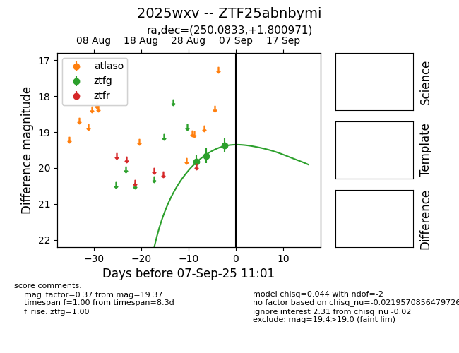

FINK: ZTF25abnbymi
Lasair: ZTF25abnbymi
ALeRCE: ZTF25abnbymi
TNS: 2025wxv
YSE: 2025wxv
ZTF25abnbymi (ztf,fink)
2025wxv (tns,yse)
equatorial (ra, dec) = (250.0833,+1.80097)
galactic (l, b) = (18.3411,+29.72882)

last ztfg=19.37, ztfr=19.72
3 ztfg, 2 ztfr detections